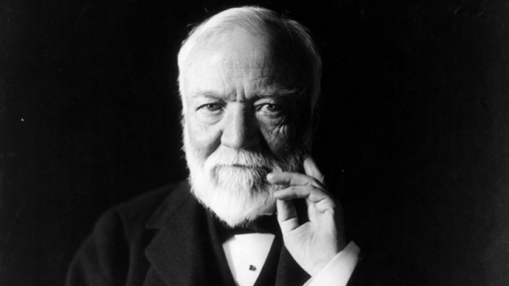

Our Mission
At Tekton, our mission is to provide stable, high quality construction services to customers around the United States. We specialize in commercial projects, building mostly offices for high-performing businesses like you!
Our company tenets are as follows:
- Quality
- Consistency
- Dependability
To download our full mission statement,
click here!
We are also fully committed to the safety of not only our workers but our contractors and customers. If you have any questions about regulation, please visit
the OSHA website for useful information, or feel free to contact us at any of the links at the bottom of this page!
Over time, we have expanded to have many locations throughout the country!
- West Lafayette, IN - Headquarters
- New York City, NY
- Sacramento, CA
- Houston, TX
- Orlando, FL
Our History
"Live, Laugh, Construction" - Wilbur Tekton

Our founder, Wilbur Tekton, started as an iron worker in a construction factory in the late 1800s. His spirit of perseverance, which permeates the company today, led him to work his way up the ladder (literally and physically). He became manager of his factory and eventually purchased it. After buying more factories, he formed Tekton Construction in 1892. It has expanded over time to become the leading business-related commercial construction company in the United States! Tekton's iconic quote, written above, remains our company motto to this day - a testament to our commitment not only to growth but to remembering our roots.